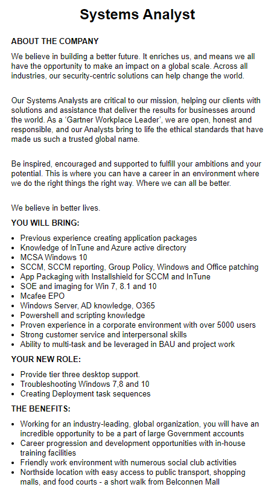
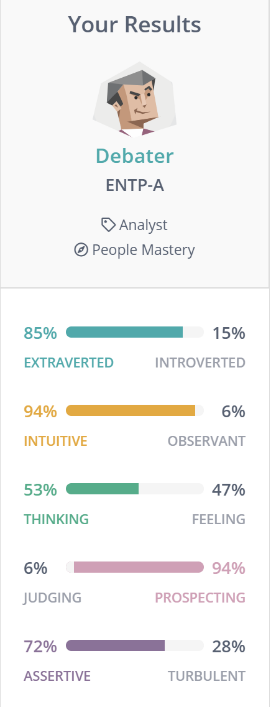
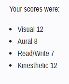
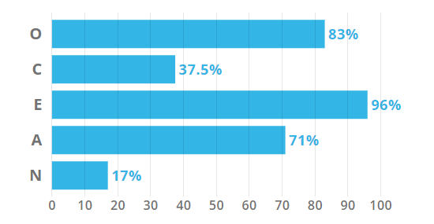

Joseph Thanh Dung TranStudent at RMIT studying a Bachelor of Information Technology |
|
I am 22 years of age, born in Australia with a Vietnamese background, being able to speak both English and Vietnamese proficiently. I had completed VCE in 2015, after five years of working and travelling I now endeavor to complete a Bachelor of IT. Just a little fact about me, I enjoy working on my own car and watching F1 motorsports as the fast pace and on edge action excites my need for adrenaline. |
|
My interest in IT first sparked in primary school when I had to program a basic game which required creating movements for characters that had to abide by specific rules. I became fascinated about the concept of being able to create my own game and the endless ways I could design it and the logic behind it. I believe IT is an industry that is constantly changing and evolving to benefit people every day in hundreds of different ways. Through technological developments such as Myki or being able to make payments with the touch of your phone have greatly improved how our society operates. Although I do not have any experience with programming or much knowledge about information technology, I am eager to learn more and hopefully be able to create my own application that can benefit others. Thus, my curiosity and desire to learn how to code had led me to enrol in a Bachelor of IT to deepen my understanding of how technology works and how it is vastly implemented in the world. The reason why I chose to study at RMIT University is because I believe it has a prestigious reputation for students who wish to study the field of Information Technology. Through the praise of RMIT alumni, I have high hopes that RMIT will be able to lead me on the right path through my journey within the IT industry. What differentiates RMIT university to others is that it offers a plethora of support services and resources. From multiple libraries to the large variety of innovative study spaces that allow students to feel comfortable providing the best studying environment possible. These innovations display the extent of care that RMIT has for its students, and that I would greatly benefit from utilizing them during my studies. Furthermore, it is situated in the CBD of Melbourne, which makes it easily accessible and convenient for me to access. As I enjoy learning new things and facing challenges, I believe the content within the Bachelor of IT is rigorous which will provide me an abundance of knowledge to further my understanding of different areas within the technological field. During my studies, I hope to learn and understand a variety of IT languages such as Java which would assist me towards reaching my goal. I am also eager to learn more about topics such as database management systems and how they function. I am curious in further advancing my knowedge about the design process involved in creating an app. Furthermore, as the course is diverse, I would expect to learn a bit of all the fields such as cybersecurity, data analytics, web development and programming as I hope to gain experience from each field. On completion of my studies, I wish to gain the skills that would allow me to eventually decide what sector of IT I would like to begin my career in. |
|  System Anaylst Role advertised on Seek |
After completing my studies, my ideal career is to become a Systems Analyst. Working for organizations and clients, they are responsible for the maintenance and development of existing computer systems. As a role that is essential for the smooth operations of businesses, tasks system analysts may be required to undergo, but not limited to:
As an outgoing and extroverted individual who thrives when working in team environments, I am naturally attracted by the consulting nature of work that is required of system analysts. I believe I would be able to seamlessly accomplish the duties that requires speaking to clients and liaising with an assortment of teams, in order to complete projects. Not only am I a team player, I also enjoy working on difficult projects where I find myself not stopping until I find a solution. As someone who is always looking of ways to improve things, another aspect that appeals to me within the role of a system analyst is the need for problem solving. Being able to work under pressure and to always be looking for improvements by viewing complications from different perspectives. Working as a system analyst, where they are constantly challenged to meet certain deadlines, to find issues and improve computer systems excites me. This position in particular, differentiates itself from other system analyst roles by appealing to my need for self-improvement. Providing career progression through in-house training, allowing me to further skills and experience. To formally qualify as a system analyst, the completion of relevant tertiary studies in IT, Computer Science or Business is required. However, it is not essential as some individuals are self-taught. Regardless of formal qualifications or not, having to troubleshoot issues within computer systems, system analysts should possess the resilience to solve complex problems. Having the ability for critical thinking, capable of strategically viewing issues from different perspectives, and proactively approaching challenges in a thorough and systematic manner. Moreover, as the role requires individuals to work effortlessly within teams for a multitude of projects, it is essential to not only have excellent communicational and teamwork skills but also high organizational capabilities to meet deadlines for multiple projects. Furthermore, a comprehensive understanding of data modelling and data visualization tools acquired through studies or previous work experience is vital. Without it individuals may not be able to complete the duties required. In this specific role, to become a viable candidate for employment some of the experience individuals must have are:
Presently, with only a VCE certificate I do not have the qualifications and experience required for this role. Along with only a basic understanding of HTML, CSS and simple Java programming I have a long journey ahead before becoming a system analyst. However, possessing attributes such as having excellent interpersonal skills and strong customer service abilities, are valuable traits that can assist me in the role of a system analyst. Being highly organized, able to complete multiple tasks simultaneously and on schedule may also assist me as system analysts are required to complete multiple assignments concurrently. In hope of becoming a system analyst I plan on building my experience and developing my skills by completing a Bachelor of IT. During the bachelor’s I desire to attain a detailed understanding of how to create application packages and expanding my technical knowledge of IT programs and how to manage them. Through working on assignments either individually or with a team I can improve my teamwork abilities, and organization skills. Graduating to attain the formal qualification is not enough to become a system analyst. Alongside with my tertiary studies, I also plan on attempting online courses such as Udemy courses to learn topics that are not covered within the bachelor. Additionally, I hope to find an internship to gain workplace experience and will need to complete mandatory certifications. Ultimately, after completing and acquiring these essential skills and qualifications I can become a system analyst. |
|

Myer Briggs Personality Test |
After completing a variety of tests, I have learnt more about my personality, methods in which I learn best and more about who I am as a person. These results help reaffirm what I already know about my strengths, weaknesses and values while also showing me things I did not know about myself. Being an individual who thrives with social interactions it was clear I am an extravert. As someone who often lingers on problems and seeks to find the solution in any way possible, was also another prominent trait that I did not know visionary personalities have. Thus, outlining my strengths of being innovative and confident. The results also display my weaknesses in procrastination and flightiness. This speaks to me on a personal note as I often struggle with committing to ideas. Although coming out with great ideas, I always find myself failing to follow through and not keeping on task. This gives me an insight to attributes I need to work on and areas I need to focus on to self-improve. Through the tests I have also found that I do not have a preferred method of learning. Whether it be visually analyzing diagrams, discussing agendas, reading articles or drawing on practical experiences depending on what the content is, I can adapt my learning style to what is required. I believe the results give me a clear understanding of how I best interact within a team environment. As a highly extraverted individual, I can easily engage with others. Being innovative, who enjoys exploring new ideas allows me to be highly adaptive with different approaches to issues. Although having creative ideas that can assist in finding solutions, I often struggle with the fine details for projects. Alongside with a multimodal style of learning and open-mindedness to other perspectives and ideas from team mates further allows me to work seamlessly within others. With an energetic and optimistic attitude, I can encourage others and push them to their best abilities bringing a positive atmosphere to the team. However, my competitiveness and methods to find solutions through less traditional ways may deter others causing conflict within a team. When forming a team, I work best with those who are also flexible with their approach to solutions rather than a more traditional pathway. Members would need to be open minded to abstract ideas and unorthodox methodologies to solving problems. Naturally being lethargic in nature having competitive teammates who enjoy pushing each other to work more efficiently are highly beneficial to enhancing the team’s performance and my own performance. Although having a highly competitive team would greatly valuable, I would need to learn to respect other team members. With a highly competitive attitude I often forget about how others are feeling. Having a plethora of ideas for projects but often lacking the ability to commit, I believe finding individuals who are attentive to specifications may greatly benefit the team. I would also need to acquire the skills to have a keen eye for detail to further my contribution within teams. Although the results provide some similarities into who I am, it does not define me. I believe they are only a guideline that gives me great insights on areas to improve on, my strengths and allow me to utilize certain styles of learning to my advantage. The results should not be applied rigidly but act as a mere reflection that show my preferences for learning. |
|
VARK Learning styles  |
Big 5 Personality Test  |
|
O: Openess, C: Conscientiousness, E:Extraversion,
|
|
As technology is advancing and new innovations are constantly rendering old ways of performing tasks obsolete, I have chosen to further explore the idea of how technology can be used to improve the quality of life for society. As a result, it had led me to come up with the idea of how we can implement facial recognition into our everyday lives. More specifically how facial recognition can be used to unlock and start the ignition for your vehicle. I believe this innovation can one day make physical keys redundant. With the use of Raspberry Pi technology and some programming you will be able to start your car using only your face. Being an individual who is passionate about helping others, I believe this project can significantly benefit others. There were allegedly 58,285 vehicles that were stolen in 2019 with an increase of 9% from 2018 in Australia (Insurance, Statistics, 2020). This rising rate of vehicle theft in Australia is extremely concerning, forcing many to look for ways to protect their cars. With the innovation of a facial recognition system that can unlock and start your vehicle with video recording of intruders may help many feel safer. Moreover, simply the idea of using your face enter and start your car excites me. As humans by nature are forgetful and lazy, where many tend to lose or forget their keys, the idea of entering and starting your car without a key may be a genius idea. The ability to monitor anyone who breaks into your vehicle and preventing them from starting it can be an appealing aspect when choosing a vehicle security system. By removing the use of physical key locks that can be broken into or copied, it can be said biometric traits such as your face that are unique to different individuals cannot be stolen, copied or modified easily. Due to the uniqueness of every person’s face structure and features, the difficulty to replicate one offers a significantly higher level of security than your traditional keys. Not only can this system offer a high standard of vehicle security, it can also serve to detect intruders. Firstly, for the system to work it must be hard wired into the vehicle’s battery supply and connected onto the vehicle’s locking and ignition systems. A potential obstacle that may affect the effectiveness of the system is in the case when the vehicle battery depletes, it could cause major setbacks as users would not be able to access their vehicle. Ways which can perhaps prevent this scenario is the introduction of a secondary power supply that stays dormant and maintains charge via vehicle’s battery supply. This can be safeguarded, with also an inclusion of an alarm that notifies users when the backup battery is low. In this case, users are then informed and can change the backup battery or check the health of their vehicle’s battery to avoid being locked out of their vehicle. The system can then be setup discreetly with two small cameras, one facing the driver’s door window and one anywhere on the vehicle’s cluster or dashboard. To use the device, users must setup the faces of those who would use the car onto the system. Once setup users can then simply come across the vehicle, in doing so triggering the sensors to turn on the system. Then using their face to unlock their car and then again to start up the vehicle. Possible drawbacks that may affect the system is the accuracy of the facial recognition. If the device is unable to recognise the user’s face or if the device recognises a foreign face as one that is stored on the system would make the device useless. To prevent the likelihood of this, there needs to be a comprehensive method of setting up the facial recognition, where users might be asked to store different facial angles and lighting conditions onto the system. Another feature of this system is that it can be connected to the internet via a USB modem with a data SIM. With connectivity to the internet, users can also set up a backup PIN through the app to remotely unlock the vehicle in case of the facial recognition failing. Also, if intruders were to attempt to break into your car, the system is will attempt to recognise their face. As intruders’ faces are not registered on the system, it will raise an alarm capturing an image and sending it to the app on the user’s phone. Drawbacks that may affect the performance of the system is that it will require users to have constant internet connection. If users do not have an internet connection, it may cause issues if they want to be informed of intruders or requiring access to the vehicle remotely via the app. Essential items that are needed for the whole system to run includes two digital cameras. The cameras will be used to facially detect users and capture photos of intruders, without it facial recognition would not be possible. Also, with the inclusion of a PIR (Passive Infrared) Motion detector will be necessary to activate the cameras and detect on coming people. It will require a USB modem with a data SIM to access the internet and send alerts to users. For the system to work it requires the use of a Raspberry Pi circuit board, that would be programmed to allow the communication between the various hardware. The board will be operated by a 12V external power supply from the vehicle and a backup battery supply. Another essential open source program required to operate the system will be OpenCV. Furthermore, Java, Python and Swift programming languages will also be required for the entire operation of the system. Although you have the required hardware and tools, it is crucial to have the skills to put everything together. A proficient understanding of the Python language will be needed to write code that is responsible for the different hardware of the system to communicate with each other and function as required. Another skill needed is knowledge of how the OpenCV libraries operate which is responsible for how the facial recognition works and the way it will identify users faces. Then languages such as Java and Swift would be utilized to create applications for both Android and Apple users to connect and communicate with the Raspberry Pi system. These programming skills are not hard to come by and with some study via university or self-taught classes online, anyone with an established foundation of coding can easily create this system. The hardware is readily available and can be purchased online for a competitive price, alongside the open source tools which is available online for everyone. If the project is successful, it would have an immense impact on how technology can improve the quality of life in society. Not only does it provide a higher-level of protection giving peace of mind for vehicle owners offering an all in one solution to vehicle security. But the advancement in technology and innovation will create alternative methods of starting and entering a vehicle rather than tradition ways. This system will perhaps be the catapult of a new era into vehicle security and methods of keyless entry in hope of reducing the rate of vehicle theft and deterring intruders from breaking in. |